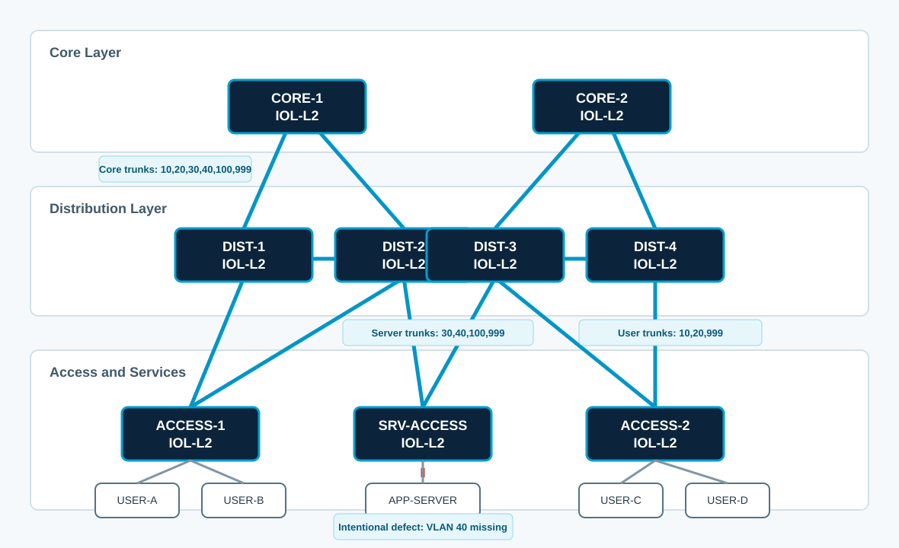

Overview
This lab is focused on 802.1Q trunk behavior at a CCNP ENCOR level. You will configure deterministic trunks, remove unsafe dynamic negotiation, prune VLANs to match design intent, troubleshoot trunk defects, and verify the operational control-plane and data-plane state.
The lab is designed to feel like a Cisco Live walk-in lab: the configuration tasks are concise, but the verification requires careful interpretation of Cisco IOL-L2 output.
Learning Objectives
- Explain how 802.1Q tags, native VLANs, and allowed VLAN lists affect frame forwarding.
- Configure trunks explicitly instead of relying on Dynamic Trunking Protocol behavior.
- Apply VLAN pruning based on traffic requirements and failure-domain boundaries.
- Identify native VLAN mismatch, missing VLAN, and negotiation-state defects from show commands.
- Validate trunk state using `show interfaces trunk`, spanning-tree output, MAC tables, and endpoint tests.
Platform Standard
- Use Cisco Modeling Labs IOL-L2 nodes for every switch in this lab.
- Use Cisco Modeling Labs IOL nodes for routers if this topology is extended later. This 802.1Q lab does not require routers.
- IOL-L2 uses 802.1Q trunking for switch trunks. In this CML image, set `switchport trunk encapsulation dot1q` before `switchport mode trunk` so the interface is no longer in Auto encapsulation state.
- Layer 3 gateways already exist elsewhere; this lab focuses only on Layer 2 trunk transport.
- Do not use EtherChannel in this lab. Each link is intentionally evaluated as an individual trunk.
- Use `write memory` or `copy running-config startup-config` only after the verification tasks pass.
Topology
The topology represents a small enterprise campus with two core switches, four distribution switches, two user access switches, and one server access switch. Trunk links are intentionally not uniform; each trunk should carry only the VLANs required by its role.

VLAN and Trunk Plan
| VLAN | Name | Purpose | Where It Must Be Carried |
|---|---|---|---|
| 10 | ENG-USERS | Engineering client VLAN | Core, distribution, ACCESS-1, ACCESS-2 trunks |
| 20 | FIN-USERS | Finance client VLAN | Core, distribution, ACCESS-1, ACCESS-2 trunks |
| 30 | APP-SERVERS | Application server VLAN | Core, distribution, SRV-ACCESS trunks |
| 40 | DB-SERVERS | Database server VLAN | Core, distribution, SRV-ACCESS trunks |
| 100 | NET-MGMT | Infrastructure management VLAN | Core, distribution, SRV-ACCESS trunks |
| 999 | NATIVE-BLACKHOLE | Unused native VLAN for trunks | All trunk links |
| Link Role | Interfaces | Allowed VLANs | Native VLAN | Negotiation |
|---|---|---|---|---|
| Core to distribution | CORE-1/2 to DIST-1/2/3/4 | 10,20,30,40,100,999 | 999 | Off |
| Distribution peer links | DIST-1 to DIST-2, DIST-3 to DIST-4 | 10,20,30,40,100,999 | 999 | Off |
| User access uplinks | DIST-1/2 to ACCESS-1, DIST-3/4 to ACCESS-2 | 10,20,999 | 999 | Off |
| Server access uplinks | DIST-2/3 to SRV-ACCESS | 30,40,100,999 | 999 | Off |
Task 1: Baseline Audit
Before changing any interfaces, identify how the trunks are currently operating. Some links are already forwarding traffic, but not all of them match the target design.
Requirements
- On each switch, collect the current VLAN database.
- Identify interfaces that are operational trunks, static access ports, or still relying on DTP.
- Find at least two defects before configuring anything.
Commands
show vlan brief
show interfaces trunk
show interfaces switchport
show spanning-tree inconsistentports
show cdp neighbors detailExpected Findings
- `DIST-2` to `SRV-ACCESS` is missing VLAN 40 from one allowed VLAN list.
- `DIST-3` to `SRV-ACCESS` has native VLAN 1 on one side and native VLAN 999 on the other.
- At least one access uplink is operating as a trunk because one side is `dynamic desirable`.
Design note: A trunk can appear up while still being wrong. The operational trunk state only proves that the link negotiated or was forced into trunking; it does not prove native VLAN, allowed VLAN, STP forwarding, or end-to-end VLAN reachability are correct.
Task 2: Configure Deterministic 802.1Q Trunks
Configure the required trunk interfaces explicitly. Do not rely on default negotiation or dynamic trunk formation.
Requirements
- Create VLANs 10, 20, 30, 40, 100, and 999 on every switch that must transport them.
- Use IOL-L2 trunk commands. Configure `switchport trunk encapsulation dot1q` before forcing trunk mode.
- Force trunk mode on all inter-switch links.
- Set native VLAN 999 on every trunk.
- Disable DTP negotiation with `switchport nonegotiate` on all trunks that support the command.
Core-to-Distribution Template
configure terminal
vlan 10
name ENG-USERS
vlan 20
name FIN-USERS
vlan 30
name APP-SERVERS
vlan 40
name DB-SERVERS
vlan 100
name NET-MGMT
vlan 999
name NATIVE-BLACKHOLE
!
interface range Ethernet0/0-1
description 802.1Q trunks to distribution layer
switchport trunk encapsulation dot1q
switchport mode trunk
switchport trunk native vlan 999
switchport nonegotiate
no shutdown
endVerification
show interfaces trunk
show interfaces ethernet0/0 switchport | include Mode|Negotiation|Native|Encapsulation
show dtp interface ethernet0/0Expected Output
CORE-1#show interfaces ethernet0/0 switchport | include Mode|Negotiation|Native|Encapsulation
Administrative Mode: trunk
Operational Mode: trunk
Administrative Trunking Encapsulation: dot1q
Operational Trunking Encapsulation: dot1q
Negotiation of Trunking: Off
Trunking Native Mode VLAN: 999 (NATIVE-BLACKHOLE)Task 3: Apply VLAN Pruning by Link Role
After the trunks are deterministic, prune VLANs so that each trunk carries only the VLANs required by the design.
Requirements
- Core and distribution peer trunks must carry VLANs 10,20,30,40,100,999.
- User access trunks must carry only VLANs 10,20,999.
- Server access trunks must carry only VLANs 30,40,100,999.
- Do not remove VLAN 999 from any trunk allowed list.
User Access Uplink Template
configure terminal
interface range Ethernet0/0-1
description 802.1Q trunks to user access layer
switchport trunk allowed vlan 10,20,999
endServer Access Uplink Template
configure terminal
interface range Ethernet0/0-1
description 802.1Q trunks to server access layer
switchport trunk allowed vlan 30,40,100,999
endVerification
show interfaces trunk
show spanning-tree vlan 10,20,30,40,100
show mac address-table vlan 40 dynamicExpected Output
DIST-2#show interfaces trunk
Port Mode Encapsulation Status Native vlan
Et1/1 on 802.1q trunking 999
Port Vlans allowed on trunk
Et1/1 30,40,100,999Task 4: Troubleshoot Trunk Defects
Three defects remain in the network. Use show commands to locate and correct them without replacing the entire interface configuration.
Defect A: Native VLAN Mismatch
`SRV-ACCESS` has a native VLAN mismatch on one uplink. On this IOL-L2 image, the mismatch may not appear as an STP inconsistent port, so compare local trunk state with CDP neighbor detail.
SRV-ACCESS#show interfaces ethernet0/1 trunk
Port Mode Encapsulation Status Native vlan
Et0/1 on 802.1q trunking 1
SRV-ACCESS#show cdp neighbors detail
-------------------------
Device ID: DIST-3
Interface: Ethernet0/1, Port ID (outgoing port): Ethernet1/1
Native VLAN: 999Defect B: Missing VLAN
Users can reach the application server in VLAN 30, but database access in VLAN 40 fails through `DIST-2`.
DIST-2#show interfaces ethernet1/1 trunk
Port Vlans allowed on trunk
Et1/1 30,100,999Defect C: Dynamic Negotiation
One access uplink forms a trunk because the distribution side is statically trunking and the access side is still `dynamic desirable`.
ACCESS-2#show interfaces ethernet0/1 switchport | include Administrative Mode|Operational Mode|Negotiation
Administrative Mode: dynamic desirable
Operational Mode: trunk
Negotiation of Trunking: On
ACCESS-2#show interfaces ethernet0/1 trunk
Port Mode Encapsulation Status Native vlan
Et0/1 desirable 802.1q trunking 999
Port Vlans allowed on trunk
Et0/1 1-4094Requirements
- Correct the native VLAN mismatch without changing the native VLAN standard.
- Add only the missing VLAN to the affected trunk; do not broaden all trunks to all VLANs.
- Remove dynamic negotiation from the access uplink.
- Verify no inconsistent ports remain.
Task 5: Validate Data-Plane and Control-Plane State
Complete the lab by proving that the trunk design works and that unsafe trunk negotiation has been removed.
Validation Commands
show interfaces trunk
show interfaces switchport | include Name:|Administrative Mode|Operational Mode|Negotiation
show spanning-tree inconsistentports
show spanning-tree vlan 10,20,30,40,100
show mac address-table dynamic vlan 10
show mac address-table dynamic vlan 40
ping 10.30.0.10 source Vlan10 repeat 3
ping 10.40.0.10 source Vlan20 repeat 3Completion Criteria
- Every inter-switch link is operationally trunking with native VLAN 999.
- DTP negotiation is off on all configured trunks.
- User access trunks carry VLANs 10,20,999 only.
- Server access trunks carry VLANs 30,40,100,999 only.
- No STP inconsistent ports remain.
- MAC addresses appear on expected trunks for VLANs 10, 20, 30, and 40.
Troubleshooting Notes
Trunk mode rejected because encapsulation is Auto: On this IOL-L2 image, `switchport mode trunk` can fail with `Command rejected: An interface whose trunk encapsulation is "Auto" can not be configured to "trunk" mode.` Set `switchport trunk encapsulation dot1q` first, then apply `switchport mode trunk`, the native VLAN, allowed VLAN list, and `switchport nonegotiate`.
`nonegotiate` rejected after trunk mode fails: If trunk mode was rejected, the interface may still be dynamic. `switchport nonegotiate` then fails because DTP is still active. Fix the encapsulation and trunk mode first, then reapply `switchport nonegotiate`.
Unsupported convenience commands: This IOL-L2 image may reject `no ip domain-lookup`. That does not affect 802.1Q behavior; remove it from pasted startup templates if it appears in the console as an invalid input.
Native VLAN mismatch evidence: Do not depend on `show spanning-tree inconsistentports` as the only signal in CML. In this lab image, a native VLAN mismatch can leave the inconsistent-port table empty. Compare `show interfaces trunk` on the local port with the neighbor's `Native VLAN` value in `show cdp neighbors detail`.
Access VLAN auto-created: If startup output says `Access VLAN does not exist. Creating vlan 10` or `Creating vlan 20`, that is informational. Verify with `show vlan brief`; if the VLAN exists and the access port is assigned correctly, continue.
First ping timeout: The first ICMP echo can time out while ARP resolves across the repaired trunk path. A result such as `Success rate is 66 percent (2/3)` is acceptable for the first test; repeat the ping if you need a clean `100 percent` confirmation.
Grade Entire Lab
Use these checks to evaluate whether the lab is complete.
Solutions
Task 2 baseline trunk solution
configure terminal
vlan 10
name ENG-USERS
vlan 20
name FIN-USERS
vlan 30
name APP-SERVERS
vlan 40
name DB-SERVERS
vlan 100
name NET-MGMT
vlan 999
name NATIVE-BLACKHOLE
!
interface range Ethernet0/0-1
switchport trunk encapsulation dot1q
switchport mode trunk
switchport trunk native vlan 999
switchport nonegotiate
no shutdown
endTask 3 pruning solution
! Core and distribution peer trunks
interface range Ethernet0/0-1
switchport trunk allowed vlan 10,20,30,40,100,999
!
! User access uplinks
interface range Ethernet0/0-1
switchport trunk allowed vlan 10,20,999
!
! Server access uplinks
interface range Ethernet0/0-1
switchport trunk allowed vlan 30,40,100,999
endTask 4 defect repair solution
! Defect A: native VLAN mismatch on SRV-ACCESS
configure terminal
interface Ethernet0/1
switchport trunk native vlan 999
end
! Defect B: VLAN 40 missing on DIST-2 server trunk
configure terminal
interface Ethernet1/1
switchport trunk allowed vlan add 40
end
! Defect C: dynamic negotiation on ACCESS-2
configure terminal
interface Ethernet0/1
switchport trunk encapsulation dot1q
switchport mode trunk
switchport trunk native vlan 999
switchport trunk allowed vlan 10,20,999
switchport nonegotiate
endExpected final verification
DIST-2#show interfaces trunk
Port Mode Encapsulation Status Native vlan
Et0/0 on 802.1q trunking 999
Et0/1 on 802.1q trunking 999
Et1/0 on 802.1q trunking 999
Et1/1 on 802.1q trunking 999
Port Vlans allowed on trunk
Et0/0 10,20,30,40,100,999
Et0/1 10,20,30,40,100,999
Et1/0 10,20,999
Et1/1 30,40,100,999
DIST-2#show spanning-tree inconsistentports
Name Interface Inconsistency
-------------------- ---------------------- ------------------
Number of inconsistent ports (segments) in the system : 0Lab complete: The network now uses explicit 802.1Q trunks, a non-user native VLAN, role-based VLAN pruning, no DTP negotiation, and clean STP consistency checks.